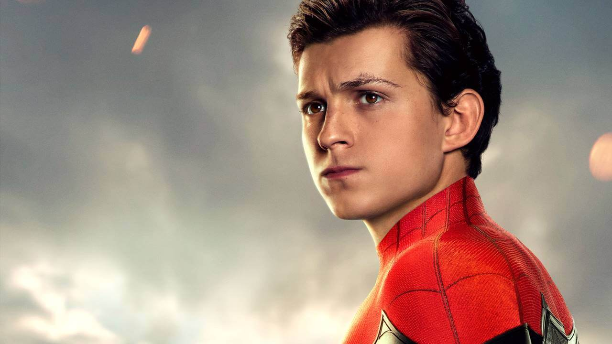
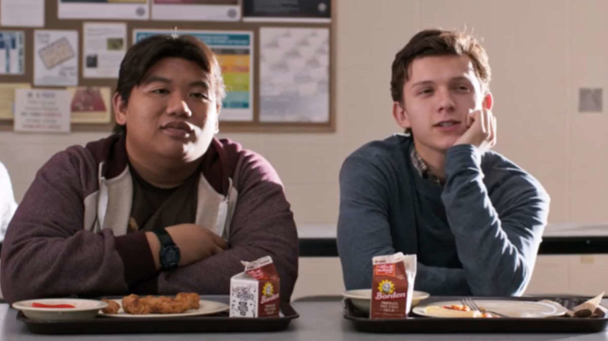
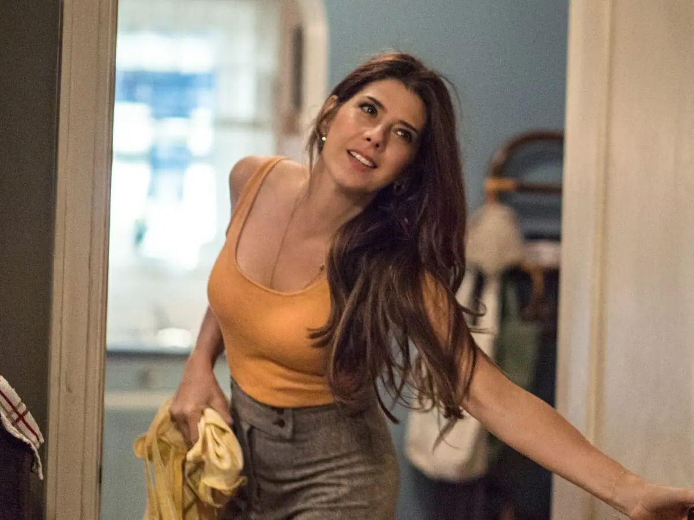
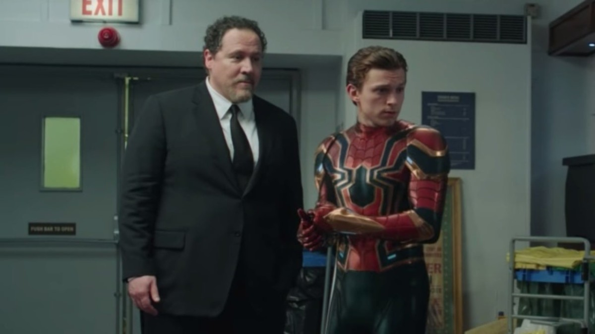
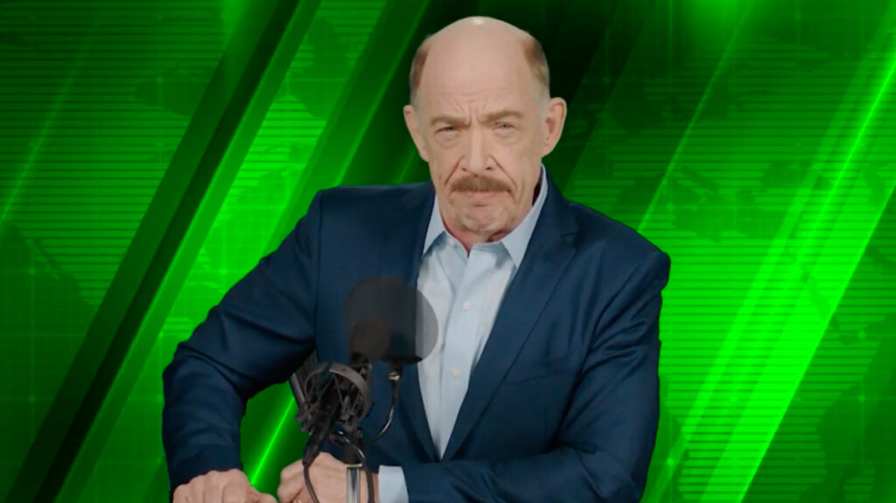
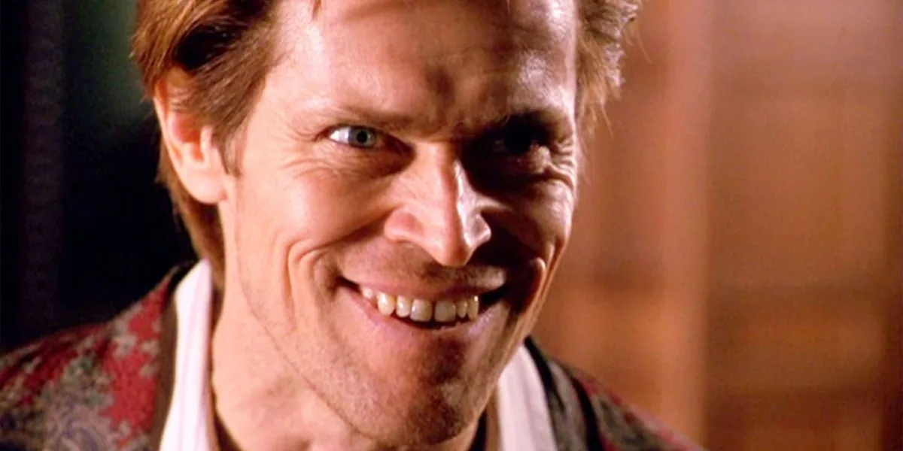
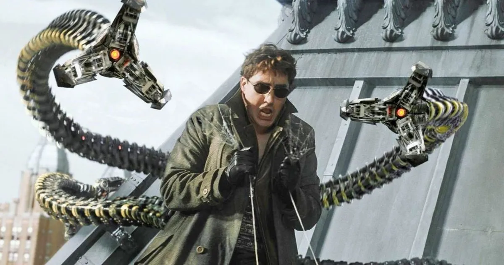
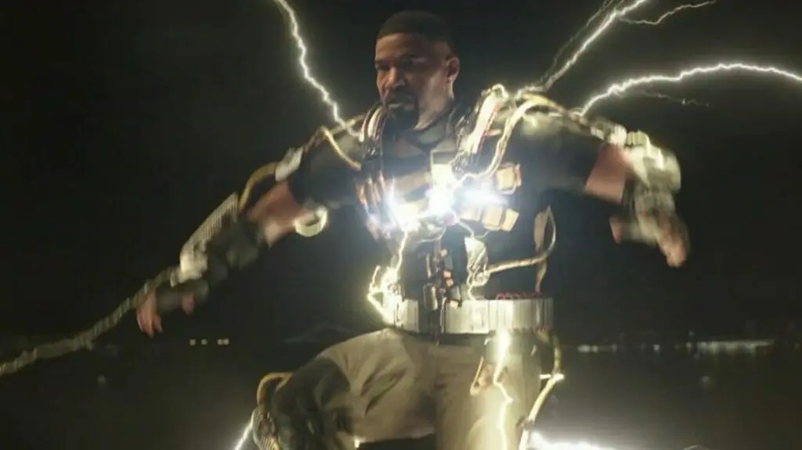

Personagem: Tom Holland – Peter Parker/Homem-Aranha

Após os dois primeiros filmes e os longas dos Vingadores, Tom Holland se ligou definitivamente ao papel. O astro da Marvel tem o grande desafio em Homem-Aranha: Sem Volta Para Casa.
Atividades: Ator, Produtor de set, Produtor Executivo.
Nome de nascimento: Thomas Stanley Holland.
Nacionalidade: Britânico.
Nascimento: 1 de junho de 1996 (Londres, Reino Unido).
Idade: 26 anos.
Personagem : Zendaya – MJ
A atriz volta como MJ após também estar nos dois filmes anteriores do Homem-Aranha. Deve ser o maior papel dela em um longa da Marvel.
Atividades: Atriz, Produtora, Coprodutora.
Nome de nascimento: Zendaya Maree Stoermer Coleman.
Nacionalidade: Americana.
Nascimento: 1 de setembro de 1996 (Oakland, Califórnia, EUA).
Idade: 25 anos.
Personagem: Jacob Batalon – Ned

O melhor amigo de Peter Parker volta a ser importante em Homem-Aranha: Sem Volta Para Casa. Novamente, Ned deve ser o assistente de tecnologia do herói da Marvel.
Atividade: Ator.
Nome de nascimento: Jacob Batalon.
Nacionalidade: Americano.
Nascimento: 9 de outubro de 1996 (Honolulu, Havaí, Estados Unidos).
Idade: 25 anos.
Personagem: Marisa Tomei – Tia May

A Tia May mais nova de todas também retorna para Homem-Aranha 3. Dessa vez podendo estar em grande perigo por saber do segredo de Peter Parker.
Atividades: Atriz, Produtora Executiva.
Nome de nascimento: Marisa Veriga Tomei.
Nacionalidade: Americana.
Nascimento: 4 de dezembro de 1964 (Nova York, EUA).
Idade: 57 anos.
Personagem: Jon Favreau – Happy

Braço direito do Homem de Fero, Happy passou a cuidar do Homem-Aranha após a morte de Tony Stark. Depois de papel importante em Longe de Casa, o segurança retorna em Sem Volta Para Casa. A adição aqui é a relação com a Tia May.
Atividades: Ator, Diretor, Produtor Executivo.
Nome de nascimento: Jonathan Kolia Favreau.
Nacionalidade: Americano.
Nascimento: 19 de outubro de 1966 (Queens, Nova York, Nova York, EUA).
Idade: 55 anos.
Personagem: J.K. Simmons – J. Jonah Jameson

A primeira variante da Marvel (o ator teve o mesmo papel nos filmes de Tobey Maguire), sem ninguém saber que isso seria possível, também volta. O novo J. Jonah Jameson deve infernizar um pouco mais a vida de Peter Parker em Sem Volta Para Casa.
Atividade: Ator.
Nome de nascimento: Jonathan Kimble Simmons.
Nacionalidade: Americano.
Nascimento: 9 de janeiro de 1955 (Detroit, Michigan, EUA).
O herói teve filme solo e apareceu na batalha final contra Thanos com os Vingadores. Em Homem-Aranha 3, faz a estreia em um longa solo de Peter Parker.
Atividades: Ator, Produtor Executivo, Produtor.
Nome de nascimento: Benedict Timothy Carlton Cumberbatch.
Nacionalidade: Britânico.
Nascimento: 19 de julho de 1976 (Londres, Inglaterra).
Idade: 45 anos.
Personagem: Willem Dafoe – Duende Verde

Após ser o vilão número 1 de Tobey Maguire, Willem Dafoe enfim volta como Duende Verde. Dessa vez, no MCU e contra o Homem-Aranha de Tom Holland.
Atividades: Ator, Coprodutor, Produtor Associado.
Nome de nascimento: William Dafoe.
Nacionalidade: Americano.
Nascimento: 22 de julho de 1955 (Appleton, Wisconsin, EUA).
Idade: 66 anos.
Personagem: Alfred Molina – Doutor Octopus

Outro vilão do Homem-Aranha de Tobey Maguire que deve ganhar destaque é o Doutor Octopus. O intérprete original dele, Alfred Molina, retorna em Sem Volta Para Casa.
Atividades: Ator, Produtor Executivo.
Nome de nascimento: Alfredo Molina.
Nacionalidade: Britânico.
Nascimento: 24 de maio de 1953 (Londres, Inglaterra, Reino Unido).
Idade: 69 anos.
Personagem: Jamie Foxx – Electro

Jamie Foxx teve uma aparição criticada em O Espetacular Homem-Aranha 2. Agora, o astro volta como Electro dentro do MCU – e com um visual bem diferente.
Atividades: Ator, Produtor Executivo, Produtor.
Nome de nascimento: Eric Marlon Bishop.
Nacionalidade: Americano.
Nascimento: 13 de dezembro de 1967 (Terrell, Texas, EUA).